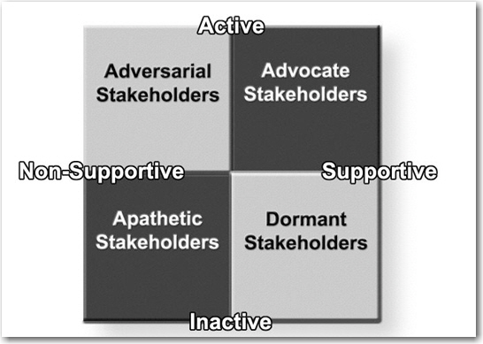

One of the most important steps in strategic and effective public relations is accurately identifying the publics with which you want to build mutually beneficial relationships. A popular axiom for public relations is that there is no such thing as a “general public.” In other words, an organization has a variety of key groups who bring different expectations for their relationship with the organization. These differences help an organization segment its publics into groups with similar values and expectations and to focus communication strategies.
Experts in stakeholder management and public relations have provided many different ways of identifying key stakeholders or publics. At the heart of these attempts is the question, “How much attention does each stakeholder group deserve or require?”This section is revised with permission from Rawlins (2006).
Because it is impossible that all stakeholders will have the same interests in and demands on the organization, Winn specified that stakeholder management be about managing stakeholders’ potentially conflicting interests.Winn (2001), pp. 133–166. Once organizations have identified their stakeholders, there is a struggle for attention: who to give it to, who to give more to, and who to ignore. Sacrificing the needs of one stakeholder for the needs of the other is a dilemma with which many organizations struggle. When these conflicts arise it is important to the success of the organization that it has prioritized each stakeholder according to the situation.
This chapter will provide a model that moves from the broadest attempts at identifying all stakeholders, to the more specific need of identifying key publics for communication strategies. The model is situational, and priority of stakeholders and publics will change according to the situation.
A stakeholderA group or an individual who is affected by or who can affect the success of an organization, such as employees, customers, shareholders, communities, and suppliers. is a group or individual who is affected by or can affect the success of an organization.Freeman (1984). The definition has been expanded to include groups who have interests in the corporation, regardless of the corporation’s interest in them. Employees, customers, shareholders, communities, and suppliers are those most commonly classified as stakeholders within an organization
Grunig and Repper differentiated the terms “stakeholder” and “public” in the following way: Organizations choose stakeholders by their marketing strategies, recruiting, and investment plans, but “publics arise on their own and choose the organization for attention.”Grunig and Repper (1992), p. 128. This classification relied on John Dewey’s definition of a public: That it is a group of people who face a similar problem, recognize the problem, and organize themselves to do something about it.Dewey (1927). Therefore, publics organize from the ranks of stakeholders when they recognize an issue and act upon it.
Organization should attempt to identify all stakeholders before narrowing them by their attributes. One way to do this is by considering how these groups are linked to the organization. A model by Grunig and Hunt breaks these links into four groups by linkage: enabling, functional, diffused, and normative stakeholders (see Figure 7.1 "Grunig’s Organizational Linkage Model").Grunig and Hunt (1984). Grunig and Hunt developed the model based on the work of Esman (1972); Evan (1976); Parsons (1976).
Going through the linkage model should help an organization identify all its stakeholders. The diffused linkage stakeholders would be different according to situation, but the enabling, functional, and normative linkage stakeholders are likely to be constant.
Figure 7.1 Grunig’s Organizational Linkage Model

Source: Rawlins (2006) adapted and used with permission from Grunig.
Grunig developed a situational theory of publics to explain and predict why some publics are active and others are passive. Within the stakeholder categories he notes that situational theory can identify which publics will “communicate actively, passively, or not at all about organizational decisions that affect them.”Grunig (2005), p. 779.
Those publics who do not face a problem are nonpublicsStakeholders who do not face a problem related to organizational decisions that affect them., those who face the problem but do not recognize it as a problem are latent publicsStakeholders who face a problem related to organizational decisions that affect them but who do not recognize it as a problem., those who recognize the problem are aware publicsStakeholders who recognize a problem related to organizational decisions that affect them., and those who do something about the problem are active publicsStakeholders who recognize and do something about a problem related to organizational decisions that affect them.. He identified three variables that explain why certain people become active in certain situations: level of involvement, problem recognition, and constraint recognition (see Figure 7.2 "Grunig’s Situational Theory of Publics").
Figure 7.2 Grunig’s Situational Theory of Publics

Source: Rawlins (2006) adapted and used with permission from Grunig.
Level of involvement is measured by the extent to which people connect themselves personally with the situation. However, people do not seek or process information unless they recognize the connection between them and a problem, which is the level of problem recognition. Whether people move beyond information processing to the information seeking behavior of active publics often depends on whether they think they can do something about the problem. Constraint recognitionThe level of personal efficacy a person believes that he or she holds, and the extent to which he or she is having an impact on the issue. is the level of personal efficacy a person believes that he or she holds, and the extent to which he or she is having an impact on the issue is possible. Those who think that nothing can be done have high constraint recognition and are less compelled to become active in the resolution of the problem. Another consideration, referent criteriaStandards of judgment that people apply to new situations based on previous experiences with the issue or the organization involved., is the guideline that people apply to new situations based on previous experiences with the issue or the organization involved.
Active publics are likely to have high levels of involvement and problem recognition, and lower levels of constraint recognition. Because they recognize how the problem affects them and they think they can do something about it, Grunig theorized that this public will actively seek information and act on that information. Aware publics will process information and might act, but are limited by lower levels of involvement and problem recognition, or higher levels of constraint recognition. Latent publics are not cognizant of how an issue involves them or don’t see it as a problem. They are simply not active on the issue. This public could become active or aware as information changes its cognitions about the issue.
Grunig tested the theory using problems that would create active and passive publics. He found four kinds of publics:
To summarize this step, active publics will have more priority over aware and inactive publics because their urgency is greater. Whether stakeholders will become active publics can be predicted by whether the problem involves them, whether they recognize the problem, and whether they think they can do anything about it.
One dimension missing from this model is whether the public is supportive or not. Each of these groups could be supportive or threatening, and stakeholder strategies would be contingent on the level of support. A comprehensive model of stakeholder prioritization should also identify whether active or aware publics are supportive or threatening.
Stakeholders who are also active publics become the obvious top priority publics. Although it would be convenient if active publics were always definitive stakeholders, human nature precludes this from happening in a constant and predictable way. Therefore, an organization must develop strategies to help mediate issues with priority publics. These strategies will depend on whether the stakeholders are supportive or nonsupportive and active or inactive. Therefore, you would develop strategies based on four groups, advocate stakeholders (active and supportive), dormant stakeholders (inactive and supportive), adversarial stakeholders (active and nonsupportive), and apathetic stakeholders (inactive and nonsupportive), as shown in Figure 7.3 "Stakeholder by Communication Strategy":
Figure 7.3 Stakeholder by Communication Strategy
Once strategies have been developed that address the stakeholders, there is one last prioritization step. According to Wilson, there are three types of publics involved in communication strategies: key publics, intervening publics, and influentials.Wilson (2005). Key publicsPublics whose participation and cooperation are required to accomplish organizational goals. Also known as priority publics. are those whose participation and cooperation are required to accomplish organizational goals. In relation to the first two steps, they are the stakeholders who have the highest priority according to their power/dependency/influence attributes, the urgency of the issue, and their level of active involvement in the issue. In Grunig’s model, the key publics are called priority publicsAnother term for key publics, these publics are those whose participation and cooperation are required to accomplish organizational goals. . To communicate effectively with these stakeholders, an organization must understand them as much as possible. Priority publics can be profiled by their demographics, lifestyles and values, media preferences, cooperative networks, and self-interests. Effective strategies appeal to the self-interests of the priority publics and reach them through the most appropriate channels (as discussed further in Chapter 9 "The Public Relations Process—RACE").
The intervening publicsPublics who act as opinion leaders, disseminating messages or information to others. pass information on to the priority publics and act as opinion leaders. Sometimes these publics, such as the media, are erroneously identified as priority publics. If an organization is satisfied when the message stops at a public, then it is a priority public. If the expectation is that the message will be disseminated to others, it is an intervening public. In most cases the media are intervening publics. Other influentials can be important intervening publics, such as doctors who pass information on to patients, and teachers who pass information on to students. The success of many campaigns is determined by the strength of relationships with intervening publics.
InfluentialsPublics who can act as intervening publics and whose opinions are more influential than public relations messages alone. These individuals can either support or work against an organization's efforts. can be intervening publics, but they also affect the success of public relations efforts in other ways. Influentials can either support an organization’s efforts or work against them. Members of some publics will turn to opinion leaders to verify or refute messages coming from organizations. The opinion of these personal sources is much more influential than the public relations messages alone. Therefore, successful campaigns must also consider how messages will be interpreted by influentials that act as either intervening or supporting publics.
In summary, stakeholders that become active publics and that can influence the success of an organization, or can appeal to the other stakeholders with that influence, should become priority publics for communication strategies. Publics that are critical to getting the information to the priority publics, such as the media, need to be recognized as intervening publics and critical to the success of the communication strategy. Influential groups or individuals may not be stakeholders in the organization, but may be important in shaping or framing the way the message is interpreted by the priority public, and therefore must be a part of the public relations professional’s communication strategy.
In order to understand how public relations should be best managed, we propose a model of contingency, mixed-motive, situational strategies based on the dimensions of (1) reactive versus proactive, and (2) self interest versus public interest. Each dimension should be seen as a continuum of more reactive/more proactive and more self-interest/more public interest rather than either/or. The interaction of these two dimensions results in four distinct approaches: defensive, responsive, assertive, and collaborative (see Figure 7.4 "The Contingency Approach to Public Relations Strategy"). We will discuss each strategic approach in detail in the following pages.
Figure 7.4 The Contingency Approach to Public Relations Strategy

Probably the two most common terms used to describe current public relations efforts are reactive and proactive. Organizations are reactivePublic relations efforts that deal with existing problems that need correcting. when they have to deal with existing problems that need correcting and are proactivePublic relations efforts that are taken to prevent or avert problems before they develop. when steps are taken to prevent or avert problems before they develop. As Liechty has noted, some public relations work is necessarily reactive because practitioners “often lack either sufficient time or freedom to respond with collaborative tactics.”Liechty (1997), p. 48. We note that resources and the support level of the CEO might pose further constraints to public relation’s ability to be collaborative.
However, organizations can take different approaches to reactive public relations, often still holding and enhancing relationships if the strategic response is carefully formulated. For example, comparing the actions of Johnson & Johnson in the Tylenol case and Exxon’s response to the Valdez oil spill illustrates how companies can differ in their response to products that present a danger to their consumers. Johnson & Johnson, although victims of malicious tampering, voluntarily pulled its product from the shelves of stores in order to ensure the safety of the customer. Exxon, on the other hand, was slow to accept responsibility and to show its concern to the media and the general public. In the end, even though Exxon spent billions of dollars more than Johnson & Johnson, one came out looking like a hero while the other’s reputation has become tainted as a villain to the environment. So even though both organizations had to use reactive public relations, their approaches could not have been more divergent.
Forward-thinking organizations often practice proactive public relations. This term means that rather than fighting change, which often proves to be a losing battle, or simply accommodating themselves to change, organizations attempt to influence change by becoming involved in the public policy process. Thus, an organization can attempt to influence public opinion with respect to specific social issues or with regard to social issues of concern to society, and attempt to influence the legislative and regulatory process with regard to specific laws and regulations.
Some organizations proactively conduct research to identify possible issues that could affect the organization and launch persuasive public information campaigns as attempts to influence public opinion and eventually the outcome of issues. Other organizations seek to collaborate with their concerned constituencies to find solutions that incorporate the interests of all parties involved and that might require change on the part of the organizations. Both of these approaches work to help prevent problems, but they use different means as preventative measures. What appears to separate how these organizations act lies in whether they are concerned primarily about their self-interests or if they also are concerned about the interests of their publics.
According to the capitalist ideal, the free market economy is dependent on self-interest as a powerful motivating factor that elicits more energy and creativity than would the pursuit of someone else’s interests. From a financial perspective, self-interest is defined as maximizing one’s return on investment (ROI). As Buchholz explains,
Entrepreneurs are expected to maximize profits, investors to maximize their returns in the stock market, and sellers of labor are expected to obtain the most advantageous terms to themselves. On the consumption end of the process, consumers are expected to maximize the satisfaction to themselves through their purchases of goods and services on the marketplace.Buchholz (1989), p. 79.
Although not all social organizations have the goal of making money, even nonprofit organizations are motivated by the self-interest of survival. Therefore, all public relations approaches will be motivated by some form of self-interest.
Public interest is more difficult to define and defend. Fitzpatrick and Gauthier suggest that
serving the public interest simply requires public relations professionals to consider the interests of all affected parties and make a committed effort to balance them to the extent possible while avoiding or minimizing harm and respecting all of the persons involved.Fitzpatrick and Gauthier (2001), p. 205.
Decisions are almost never made with pure self-interest or pure public interest as their motivations. Often decisions are made with collaborative interests, which allows them to “be represented as in the public interest, even if their ultimate motivation is the financial benefit of the company.”Fitzpatrick and Gauthier (2001), p. 197. At the same time, Buchholz acknowledges that those in position to define the public interest can never divorce themselves from their own self-interests.
The defensive approachA reactive behavior that acts primarily in the self-interest of an organization. It typically consists of planned, one-way communication. is a reactive behavior that acts principally in the self-interest of the organization. The responsive approachA reactive behavior that considers its impact on an organization's stakeholders. is a reactive behavior that considers its impact on stakeholders. The assertive approachA proactive behavior that promotes an organization's self-interests in an attempt to control that organization's environment. Bernays referred to this asymmetrical approach to public relations as the engineering of consent. is proactive behavior that promotes self-interests in an attempt to control an organization’s environment. And, the collaborative approachA proactive behavior that uses dialogue to create mutually beneficial solutions that incorporate the interests of both the organization and its stakeholders. Used by organizations to build consent and support among its publics. is proactive behavior that uses dialogue to create mutually beneficial solutions that incorporate the interests of both the organization and its stakeholders.
The primary form of communication for the defensive approach is planned one-way communication. The defensive approach uses the tools of publicity and public information to disseminate “facts” and “educate” publics about an organization’s actions or policies in response to criticisms or crises. Sometimes a defensive approach is the only one that can be used because the organization is falsely accused of certain behaviors or standards; defending itself from such erroneous information is a legitimate and logical recourse. The defensive approach becomes a necessary response to certain situations and problems, but it is not an ideal approach if used exclusively for all situations. If public relations is relegated to practicing primarily the defensive approach in an organization, then its function is limited to damage control that results in the loss of credibility and trust with valuable publics. It is predictable that public relations professionals who are confined to practicing this approach are often representative of communication technicians and have very little power or participation in the decision-making process of an organization.
The responsive approach is also used to react to situations, but in this approach an organization acts in a fashion that demonstrates its concerns for society. This approach has become more prominent as organizations have lost the trust and confidence of their stakeholders. Social responsibility has become a rallying cry for consumer and environmental advocates. Some organizations learned that certain crises were better resolved when communication and actions showed remorse and concern toward publics and toward society. These organizations would also try to shift into a more proactive mode by identifying actions they were taking to prevent such crises in the future.
The much-documented Tylenol case set the standard for this approach. The introduction of the tamper-proof seals revolutionized product packaging. Kathie Lee Gifford’s response to reports that her clothing line was using “sweatshops” is also representative of this approach. Gifford and her husband went to one of the shops with hands full of dollars to offer to the workers and pledging to campaign against sweatshops and to allow independent monitors to visit factories that made her clothes. Although skeptics could easily argue that she did this to preserve her business rather than as a response to her conscience, it is not easy to analyze motive. The responsive approach in these cases was apparently more effective than a defensive approach would have been.
Bernays’s “Torches of Freedom” publicity stunt in the 1920s is a good example of the assertive approach. Bernays helped George Washington Hill and the American Tobacco Company break down the social taboo that discouraged women from smoking in public by having young debutantes, or paid representations of such figures, walk in the Easter parade smoking Lucky Strike cigarettes. Using publicity and Freudian psychology of attitude change, Bernays was able to condition the marketplace to accept female smokers and thereby increase the market for Lucky Strike. Bernays played an important role in the development of this asymmetrical approach as he promoted public relations as the “engineering of consent.” Organizations that use this approach see public relations as an asymmetric strategic function that helps control the external environment.
Many corporations have used the assertive approach to shape marketing, social, and regulatory conditions that would favor them. Sometimes the assertive approach is used to the detriment of society’s best interests. An example of an assertive measure that had a negative social impact is the criminal conspiracy by General Motors (GM), with Firestone Tires and Standard Oil of California, to eliminate the electric streetcar system in Los Angeles. Los Angeles had one of the best electric streetcar systems in the country before GM bought it out and converted it to GM buses that used Firestone tires and Standard Oil gasoline. In 1947 the Federal government found GM and its coconspirators guilty of criminal actions and fined them $5,000.United States v. National City Lines, Inc., et al. Since then, the city of Los Angeles, with support of federal grants, has spent billions of dollars on building an electric subway system to reduce pollution and public transportation problems. At the same time, there is an abundance of prosocial examples of the assertive approach, such as the civil rights movement and health awareness campaigns to reduce the risk of heart disease, cancer, diabetes, and lung diseases.
The collaborative approach is, or should be, used by organizations when building consent and support. Collaboration relies on an organization’s ability to show how its actions will benefit or not harm its stakeholders. A collaborative approach requires interaction with the publics that invites participation and involvement along the conditions of honest and genuine dialogue that respects the rights of each side and is nonmanipulative in intent or action. Collaboration emphasizes that the publics who are affected by or who can affect the action of an organization decision should participate in the decision-making process. It involves cooperation to develop equilibrium between the interests of the two parties. As Murphy noted, conflict always exists, but how the conflict is handled is usually on a continuum ranging between pure competition (a zero-sum approach) and a pure coordination approach that attempts to obtain a mutually beneficial outcome (win-win approach).Murphy (1991), pp. 115–131. The collaborative approach uses the coordination motive to negotiate outcomes that will help strengthen relationships with key stakeholders, helping both an organization’s self-interest and relationship maintenance.
As an example of the collaborative approach, consider the case of a large corporation in Memphis, Tennessee, that desired to build its new headquarters in a very prestigious neighborhood. The planned site was a parklike property that the corporation owned. On the multiacre property was a large, and historical, mansion that the corporation used as an overflow office. The corporation wanted to add an additional building that would house the entire headquarters. However, this was going to be a difficult task because the city’s most prominent citizens owned most of the homes in the area and recently the neighborhood had fought against converting an abandoned school building into an office and won.
Although the corporation already owned the property, it decided to collaborate with the neighborhood to find mutually satisfactory solutions rather than face a possible court injunction. The public relations director met with the homeowners association to understand the concerns and anxieties about building a corporate headquarters in the neighborhood. The major concerns were the following:
Taking this information back to management, the public relations director worked with the CEO and other senior officers to develop strategies that would generate support for the construction of their building. Through further meetings and negotiations with the association, the corporation agreed to the following conditions:
The corporation built its new headquarters with vocal support from its neighbors and neighborhood relations were very positive for several years to come. The public relations director often posted notes from neighbors who wanted to thank a security guard for helping find a lost dog or for contributions to neighborhood fund-raising efforts to benefit charities. Using the collaborative approach, this corporation was able to achieve a win-win solution through two-way communication.
Developing positive relationships with stakeholders is a necessity for organizations. The first step is to identify your stakeholders and then prioritize them according to organizational goals and situations. A common tendency is to respond to the squeaky-wheel stakeholder. If the organization has not properly prioritized its stakeholders and their relationships, this group may get more attention than is deserved. This model demonstrates that the squeaky wheel may not be the stakeholder with the greatest priority. By using the steps outlined in this chapter, organizations can take a more systematic and comprehensive approach to prioritizing stakeholders.
To help organizations deal with varying situations, the four segment approach of the contingency model helps to create an effective public relations strategy. The understanding of these four main approaches offers you a theoretical foundation and a practical guide to practicing strategic public relations.